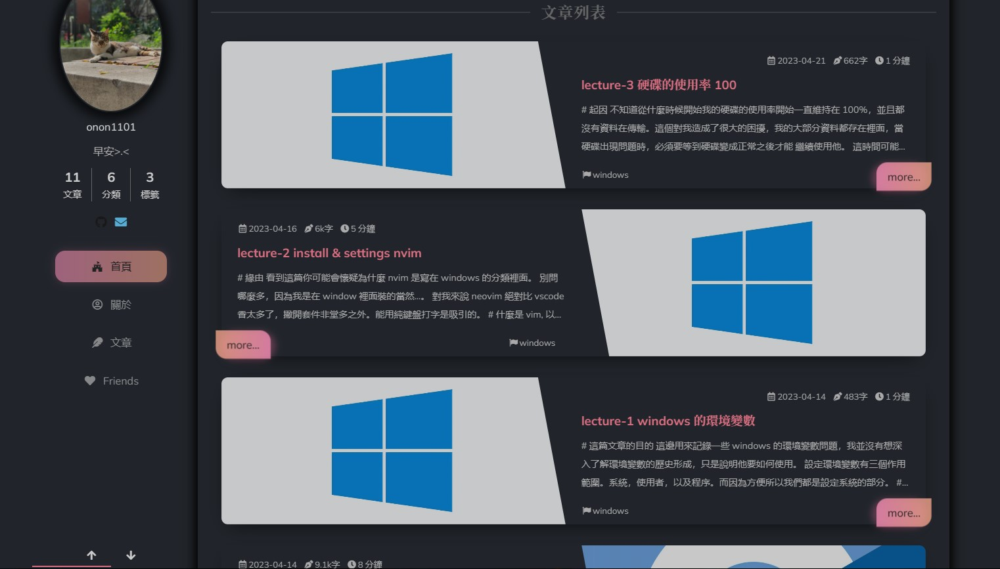
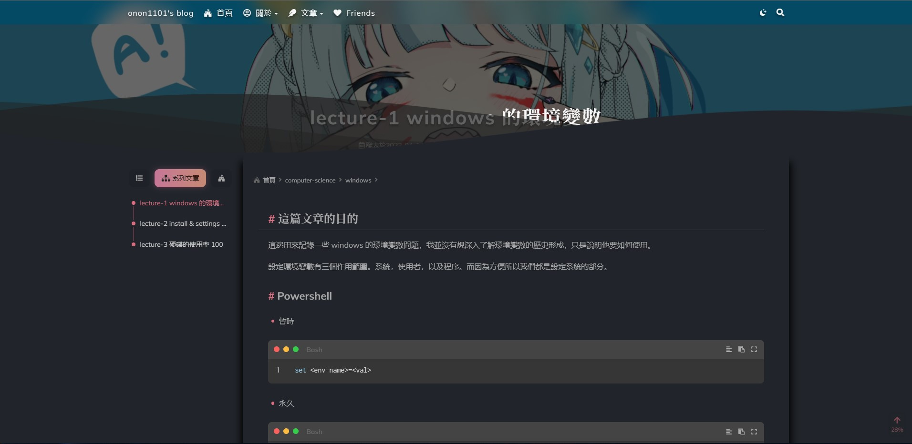
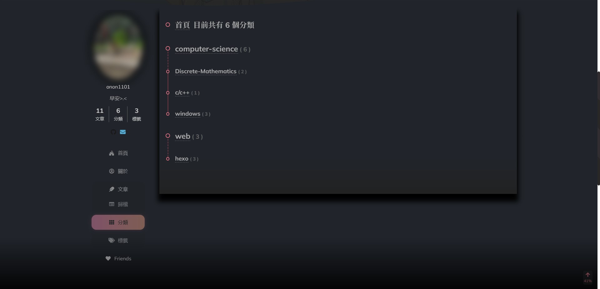

如果你看到這一頁，代表你非常好奇這個網站的架構。老實說我也不太清楚內部的細節，但大部分的操作方式可以參考 hexo 的 Next 主題。
# 起因
這個網站的架設原因是看到有一個交大的同學架設了一個網站，覺得很酷就來試試看了。雖然沒啥困難，但是我想分享一些或者記錄一些看到不同的技術，並且分享而已。但個人很懶惰，所以就多少紀錄一點好了。可能會不太清楚大部分都點到為止，真的有興趣的話可以深入研究。
# 這個網站是怎麼架的
網路上有個部落個框架叫做 hexo , 是專門用於部落格，他可以生成一個靜態的網站，關於靜態跟動態網站是什麼就請你們去查查了。總之，部落格由他而生，那麼為什麼可以那麼酷。
其實這個是由其他人寫的主題。有了部落格框架後，還要套用酷酷的主題，框架就類似於你只要管理頁面跟頁面的關係，不用從最底層去寫每一個頁面，而頁面顯示的方式就是主題了 (說的有些籠統，還是要請你們去查一下), 總之這個由一個中國人寫的主題 shodax 吧，我並沒有那麼厲害單幹一個網站出來，總之他寫的文檔散落在各地，有一些我有把它整理起來具體的話可以參考我寫的 hexo 分類裡面詳細的整理資料。
# 如何導覽這個網站
以下是你們看到的首頁
這邊是按照日期排序的文章，從上到下是新到舊。

當你隨邊從這邊點進去一篇文章，會發現它底下的上一篇以及下一篇並不是按照分類排序的，是按照時間排序的。
如果想按照分類排序的話呢…, 可以點選 left bar 裡面的第二個選項：系列文章，就可以看到以文章排序的列表了。

這樣的設計雖然有點誤導，可是還是有它的意義在對吧？
# 分類的部分
大分類跟小分類之間會存在一條虛線，而小分類跟小分類之間會是直線，我不知道為什麼要這樣設計 xdd。總之這樣就可以比較清楚每個分類之間的關係了八。
